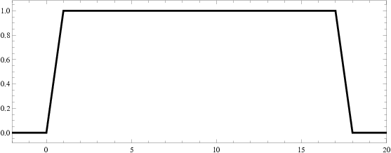

Sharpness of the Martin-O'Bryant autoconvolution inequality
Martin and O'Bryant asked whether the inequality ||f*f||_2^2 <= ||f*f||_1 ||f*f||_inf can be sharpened by a constant c<1 for nonnegative f. A long series of numerical constructions had pushed lower bounds for the optimal c to about 0.9637.
Step functions are encoded by polynomials with nonnegative coefficients, so that the autoconvolution corresponds to the squared polynomial. Polynomials P_i, defined by the generating function 1/sqrt((1-t)(1-zt)), satisfy sum P_i P_{s-i} = 1+z+...+z^s. These P_i are combined into coefficient blocks separated by base-D digits, which makes f*f have many plateaus near its maximum that carry almost all of its mass. The proof was found with ChatGPT and formally verified in Lean 4 using Mathlib.

No constant c<1 works: the supremum of the ratio is exactly 1. An explicit family f_m satisfies R(f_m) >= (1-1/(8m^8))(1-1/m)(1-1/m^2)^2, which tends to 1.
| Date | Construction | Value |
|---|---|---|
| Oct. 2002 | Martin and O'Bryant | 0.88254240 |
| Nov. 2025 | Georgiev et al. (AlphaEvolve) | 0.96100000 |
| Nov. 14, 2026 | MLAI-Yonsei | 0.96366156 |
| This paper | Theorem 1 | 1 |